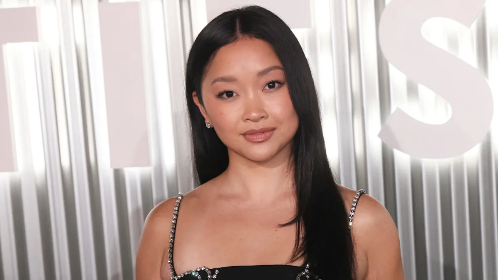
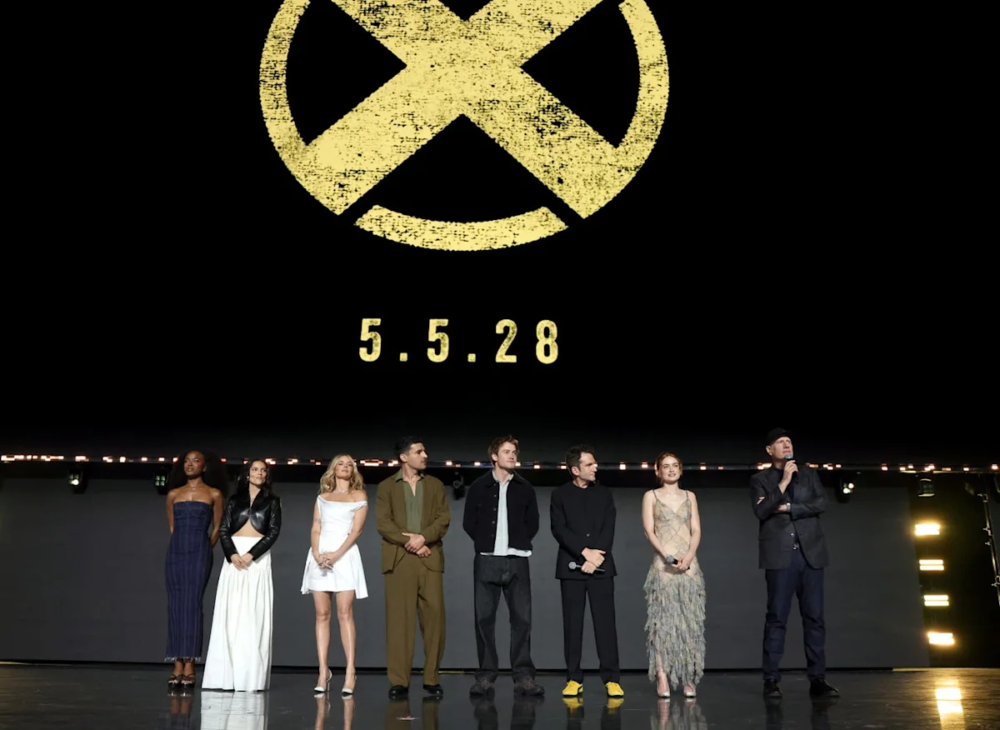

Lana Condor Opens the Door to a Jubilee Comeback as Marvel Builds Its Next X-Men Team
Entertainment | Movies
Published: Thursday, August 27, 2026

Lana Condor may not be finished with the X-Men.
The actor, who introduced movie audiences to Jubilee in 2016’s X-Men: Apocalypse, has revealed that she has reached out to the creative team behind Marvel Studios’ upcoming mutant reboot about potentially returning to the role.
There is no casting deal at this point, and Marvel has not announced Condor as part of the new X-Men movie. But her latest comments show that the actress is actively interested in finding a way back into the franchise.
Condor discussed the possibility while attending San Diego Comic-Con, an event that carries particular significance for her because her first Comic-Con appearance came during the promotion of X-Men: Apocalypse nearly a decade ago.
Now, with Marvel preparing to launch a completely new chapter for the X-Men, Condor wants the studio to consider bringing Jubilee along for the ride.
Condor Has Already Made Her Case
Rather than waiting for Marvel to approach her, Condor said she has personally communicated her interest to filmmakers working on the reboot.
Her argument is straightforward: she is no longer the young performer who appeared in Apocalypse. A decade of additional acting experience has given her a different perspective on the character and on filmmaking itself.
Condor has indicated that she believes those years could actually strengthen her case for returning.
That does not mean Marvel has committed to the idea.
The actor’s remarks describe conversations and expressions of interest rather than an official offer. Until Marvel announces a deal, Jubilee’s place in the upcoming movie remains uncertain.
Jubilee’s Place in Marvel’s New Era

The timing of Condor’s comments is significant.
Marvel Studios is preparing its X-Men reboot for 2028, following the events that will unfold through the next major Avengers films. The project is expected to introduce a new generation of mutants to the Marvel Cinematic Universe.
Several important characters have already been cast.
Sadie Sink is set to portray Jean Grey, while Kit Connor will play Scott Summers/Cyclops. Maya Boyd has been cast as Storm, Inde Navarrette as Rogue and Samara Weaving as Emma Frost.
Christopher Abbott is taking on Professor Charles Xavier, while Adam Driver has been announced in the role of Nathaniel Essex, better known as Mister Sinister.
The lineup is notably different from the ensemble audiences became familiar with during the Fox era.
That makes Condor’s potential return an intriguing possibility. Rather than being part of a straightforward continuation, she would potentially be entering a franchise that is being rebuilt around an entirely different generation of performers.
Why the Casting Could Be Complicated
There is one obvious issue Marvel would have to consider: Jubilee’s age.
In the comics, Jubilee is generally associated with the younger side of the X-Men. Condor was also portrayed as a young mutant when she appeared in Apocalypse.
Ten years have now passed.
Meanwhile, several of Marvel’s newly announced X-Men actors are considerably younger, creating a cast that appears designed to establish a new generation of characters.
Marvel could theoretically adjust Jubilee’s role to fit the new story. The character could be presented as an older and more experienced mutant rather than as a teenage student.
That would allow Condor to return without necessarily recreating the exact version of Jubilee seen in the previous movies.
Whether Marvel wants to take that approach is unknown.
The MCU Has Already Changed the Rules
The possibility of Condor returning would have seemed considerably less likely before Marvel began heavily incorporating alternate realities into its storytelling.
The MCU has increasingly demonstrated that characters from previous Marvel franchises can appear alongside its current heroes without requiring every element of the older continuity to remain intact.
Deadpool & Wolverine provided perhaps the clearest example of that strategy, bringing performers and characters associated with earlier Marvel movies into the MCU’s broader multiverse.
That precedent has encouraged speculation that Marvel could preserve certain pieces of the X-Men’s cinematic history while simultaneously moving the franchise in a new direction.
However, there has been no announcement indicating that Condor’s Jubilee will be handled that way.
For now, it is simply another possibility available to Marvel.
The New Team Is Still Missing Several Familiar Faces
Despite revealing a significant portion of the new cast, Marvel has not completed the roster.
Characters including Wolverine, Magneto, Beast, Iceman, Angel and Jubilee have remained subjects of speculation surrounding the reboot.
That leaves the door open for additional announcements.
Condor’s public interest therefore arrives at a potentially important moment. If Marvel intends to include Jubilee, the studio must eventually decide whether the character belongs in the first chapter of its new X-Men story and, if so, whether the previous actress should return.
The decision could also depend on how Marvel handles the relationship between its upcoming Avengers movies and the rebooted mutant universe.
From Jubilee to a Much Bigger Career
Jubilee was one of Condor’s earliest major film roles, but it was far from the role that ultimately defined her career.
Her breakthrough came with Netflix’s To All the Boys I’ve Loved Before, where she played Lara Jean Covey. The success of that franchise established Condor as a leading actor outside the superhero genre and opened the door to a variety of additional projects.
She has since worked across several genres, building considerably more experience than she had when X-Men: Apocalypse arrived in theaters.
That history is part of what makes her argument to Marvel interesting.
Condor is not simply asking to repeat a role from her past. She is asking whether the person who played Jubilee nearly 10 years ago could bring something different to the character today.
Nothing Is Official Yet
For fans hoping to see Condor return, there is still a significant amount of uncertainty.
Marvel has not announced her as part of the 2028 film. Condor has not confirmed that she has received an offer. And there is no guarantee that Jubilee will be included in the final story.
What is confirmed is that Condor wants the opportunity.
Marvel’s X-Men reboot is expected to represent a major reset for the franchise, and the studio has already demonstrated that it is willing to mix established Marvel history with new interpretations.
Whether Jubilee becomes part of that future — and whether Condor gets another chance to play her — could become one of the more interesting casting questions as Marvel continues filling out its mutant roster.
For now, the message from Condor is clear: the door is open, and she is waiting to see whether Marvel walks through it.